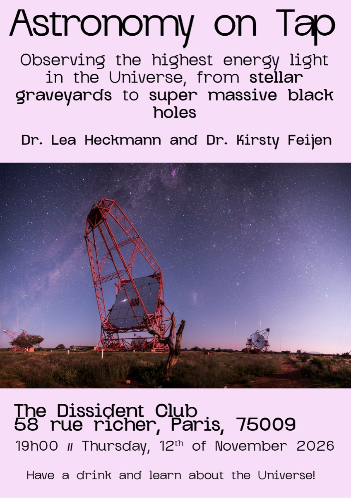

Connecting astronomy with the public
Press releases
The largest dark matter map of the northern sky
The UNIONS collaboration announced it in July 2026: ten years of imaging the northern sky and the shapes of 61 million distant galaxies, and the mass their distortion reveals. The blue is that mass.
Within the UNIONS collaboration, I wrote the press release for the CEA website and made graphics that were published in the Canadian newspaper Globe and Mail.
See it full screen University of Waterloo CEA-Irfu The Globe and Mail
Astronomy on Tap Paris
Among other public outreach activities, I have been organising Astronomy on Tap in Paris since November 2023, where we get to explain astrophysics to the general public in a relaxed, friendly setting.
A relaxed evening series bringing astrophysics to Paris bars with short talks, live demos, and quiz rounds.
- Role
- Principal organiser: curating speakers, running logistics, and keeping the AV and livestreams smooth.
- Format
- Two short talks + quiz + Q&A every month. Bilingual where possible to welcome both French and English-speaking audiences.
- Partners
- Supported by local universities and labs, with venues across the city that make science approachable.
Recent talks
